The Physics Behind Quantum Circuits
From single-qubit rotations to interactions and answer probabilities

Contents
- What does a rotation change in a quantum state?
- Giving equal and unequal bit pairs different phases
- Why does an energy difference become a rotation?
- Putting a problem into a circuit
- Turning phase differences into answer probabilities
- More couplings call for a new choice of angles
- What a researcher should read in a circuit
- References
When we draw a quantum circuit, small boxes line up along the wires: a gate that rotates one qubit, a CNOT connecting two qubits, then another rotation. A few lines of code run the circuit and return a result. Explaining why the boxes belong in that order can be harder. What has rotated? What relationship has formed between the qubits? Where does that change enter the problem we want to solve?
A short derivation shared by Daniel Buchta offers a useful way into these questions. Place a single-qubit Z rotation between two CNOT gates, and the combination implements a two-qubit ZZ interaction. His post connects this identity to Hamiltonian simulation and variational quantum algorithms. [1] An operation that changes the phase of one qubit becomes a coupling between two qubits.
The language of physics helps us follow what happens. Energy differences become phase differences as time passes. Those phase differences change how amplitudes add and cancel in later operations. At the final measurement, the difference appears in the probabilities of the outcomes. We will follow that connection through a complete calculation for the smallest two-qubit problem.
What does a rotation change in a quantum state?
Write a qubit state as  . The complex numbers
. The complex numbers
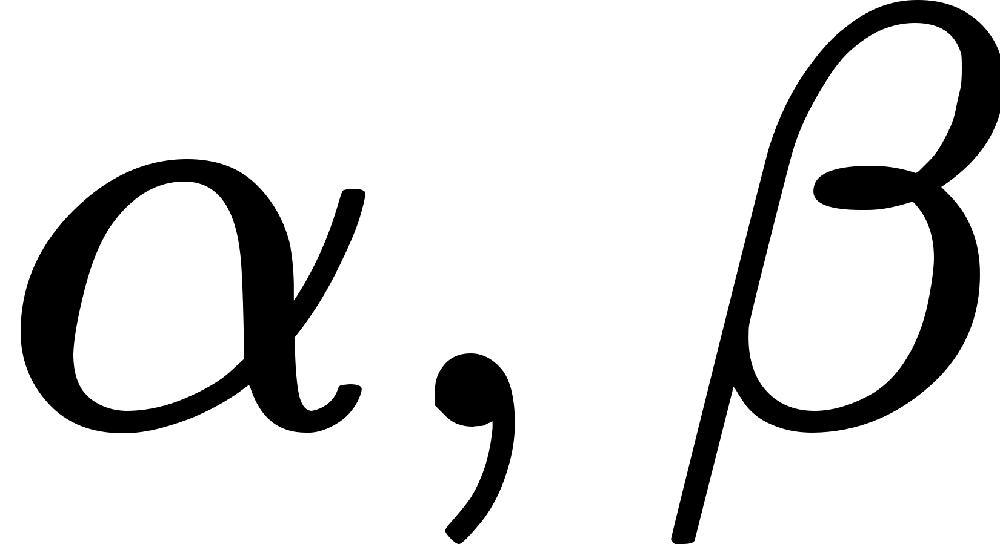
are the amplitudes of its two components. A measurement in the Z basis, which distinguishes 0 from 1, gives probabilities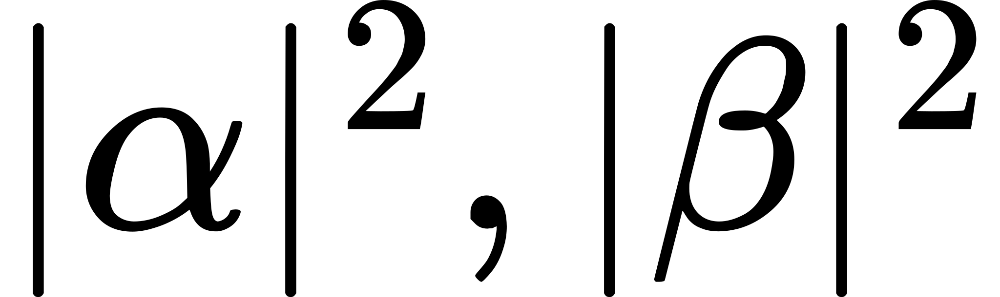
, whose sum is 1. A complex amplitude's magnitude determines a probability; its direction, or phase, determines how it adds to other amplitudes.Start by applying a Hadamard gate  to
to  :
:

The two components have the same magnitude and phase, and each measurement outcome has probability 1/2. Now apply a Z rotation through an angle
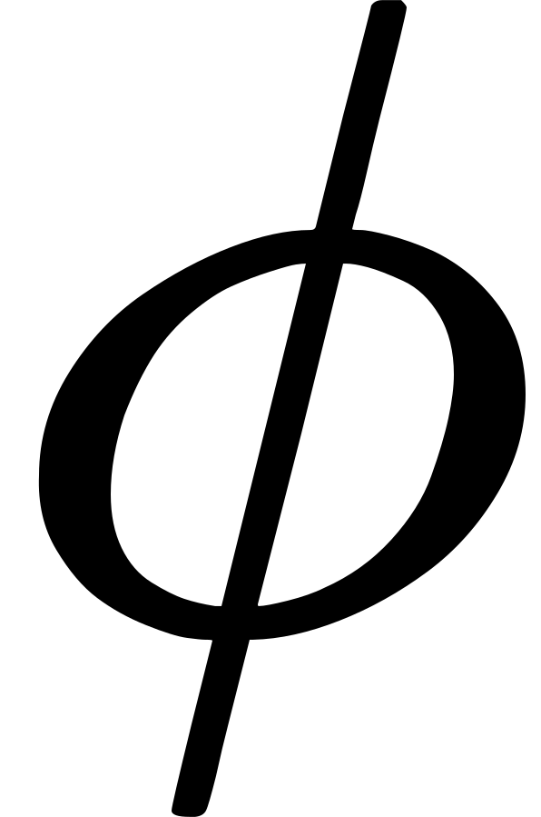
. Z is the Pauli operator with eigenvalue +1 on and −1 on 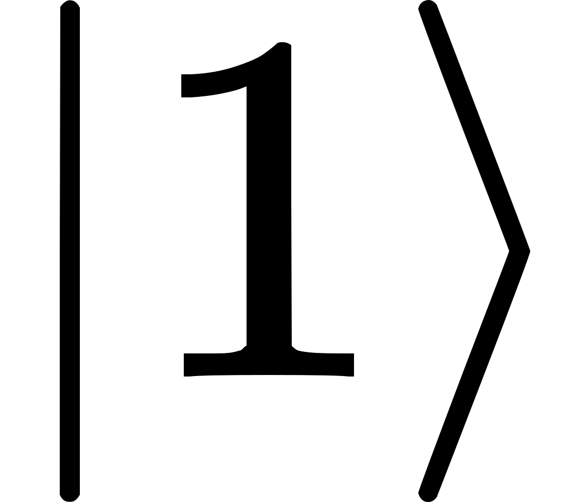
. [2]
Both amplitudes still have magnitude
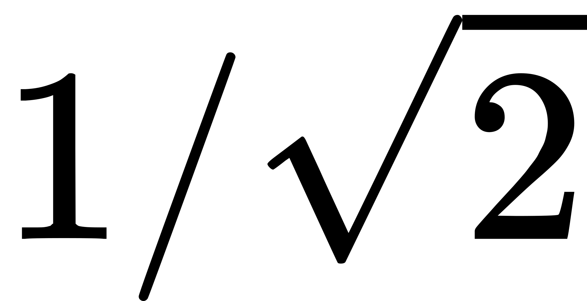
, so the Z-basis probabilities stay the same. What changes is the relative phase between the two components. Multiplying the entire state by one common phase factor would turn all its amplitudes together. Here, the directions of the two components change relative to each other.To read that difference, we need an operation that brings the components together again. Applying another Hadamard makes the amplitude leading to 0 depend on their sum, and the amplitude leading to 1 depend on their difference:
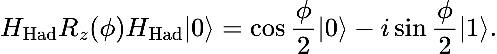
Thus  and
and
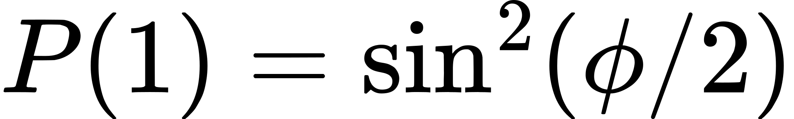
. At , we always read 0; at
, we always read 0; at 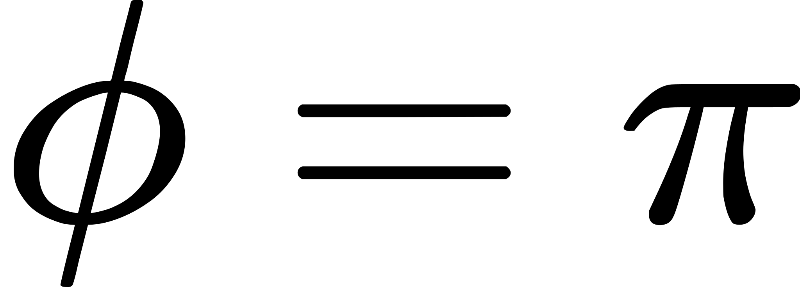
, we always read 1. The probabilities that remained equal immediately after the middle rotation become different after the final Hadamard. Interference is the addition or cancellation of amplitudes leading to an outcome, according to their phases.In Figure 1, follow the lengths of the arrows separately from their directions. After Rz, their lengths stay equal while their directions separate. After the last Hadamard, that difference in direction appears as a difference in the heights of the probability bars.
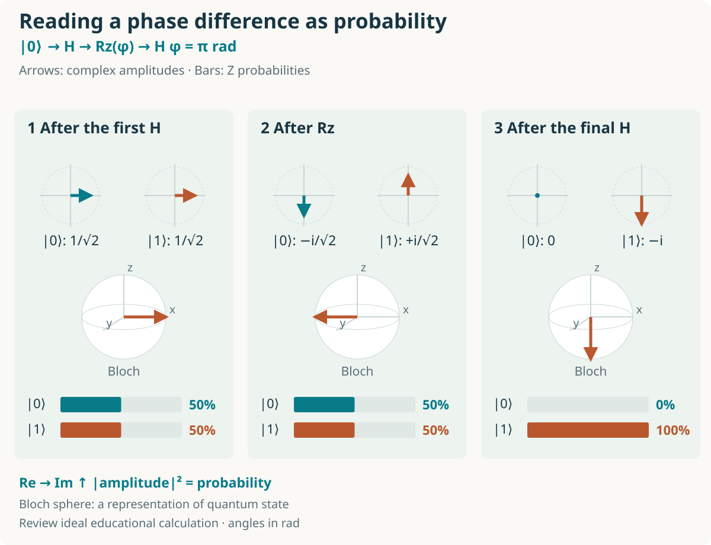
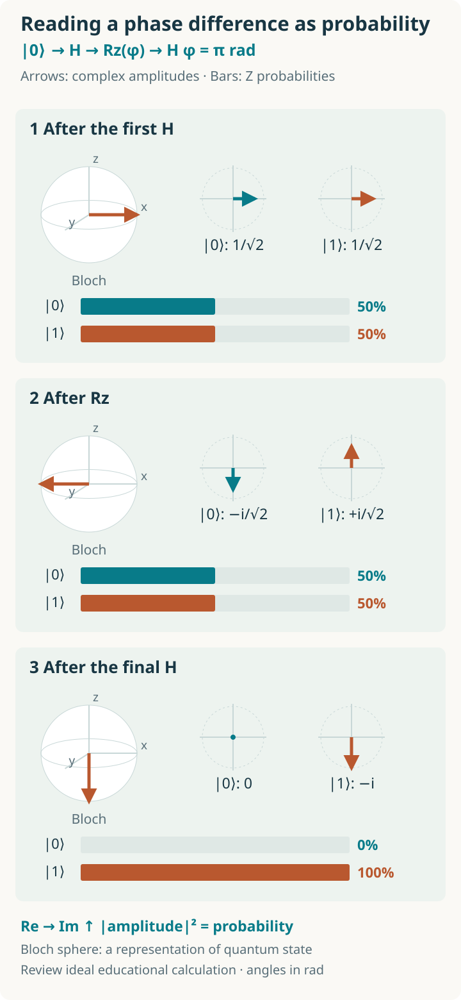
On the Bloch sphere, this state is a point on the surface. The north and south poles represent  , and the relative phase of the two components determines its position around the equator. A Z rotation turns that position around the axis. This geometry represents the relationship between two state components. In a physical device, the chosen pair of energy levels and the drive implement the rotation in state space. A Y rotation starting from produces
, and the relative phase of the two components determines its position around the equator. A Z rotation turns that position around the axis. This geometry represents the relationship between two state components. In a physical device, the chosen pair of energy levels and the drive implement the rotation in state space. A Y rotation starting from produces  , so in this case the Z measurement probabilities also change with the rotation angle.
, so in this case the Z measurement probabilities also change with the rotation angle.
Giving equal and unequal bit pairs different phases
With two qubits, the state has four components:  . Label the first bit
. Label the first bit
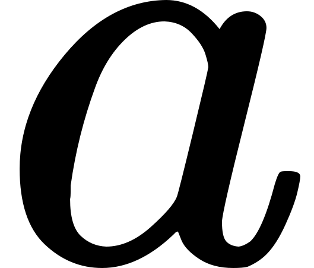
and the second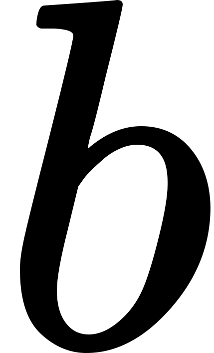
, and choose a as the CNOT control and b as its target. CNOT flips b in the components where a is 1. In bit notation, , where
, where 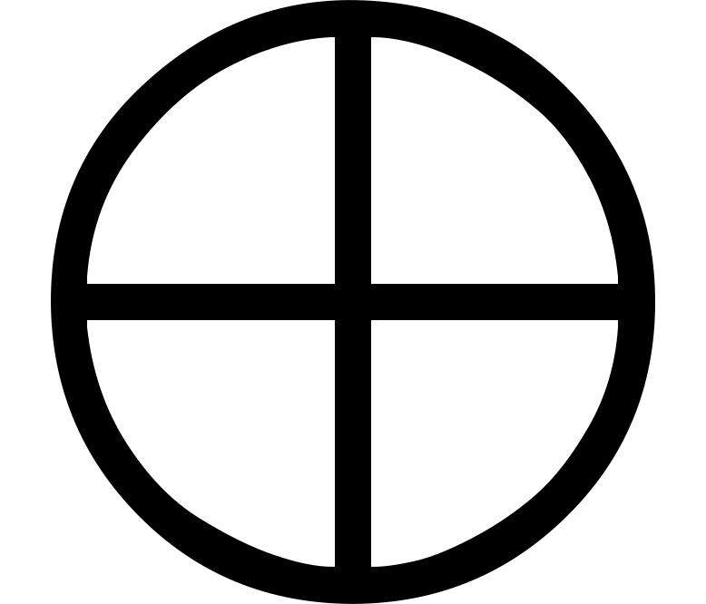
is exclusive OR: 1 for unequal values and 0 for equal ones.After the first CNOT, b holds the parity of the original pair. For original inputs 00 and 11, b is now 0; for 01 and 10, it is 1. Applying  to b multiplies equal-bit components by
to b multiplies equal-bit components by  and unequal-bit components by
and unequal-bit components by  . The last CNOT restores the original bit arrangement. The phase given to each component remains.
. The last CNOT restores the original bit arrangement. The phase given to each component remains.
| Original bits | After first CNOT | Phase factor from rotation | After last CNOT |
|---|---|---|---|
| 00 | 00 | |
00 |
| 01 | 01 | |
01 |
| 10 | 11 | |
10 |
| 11 | 10 | |
11 |
In a superposition, all four components follow this rule together, with no intermediate parity measurement. We can express the combined operation using the eigenvalues of ZZ.
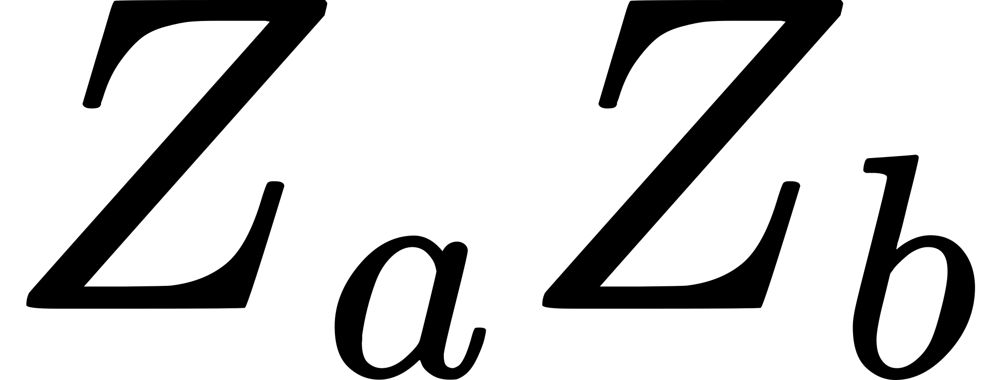
assigns +1 to00 and 11, and −1 to 01 and 10. Therefore, [3]

The rightmost operator acts first. In the circuit, the execution order is the first CNOT, Rz on b, then the last CNOT. A phase operation on one qubit has become a phase that depends on the relationship between two qubit values. The CNOTs supply the two-qubit operations needed for this construction.
Follow the four paths in Figure 2 from top to bottom. Restoring the bit arrangement and reversing the phase are different operations. The relation can be condensed into the operator identity
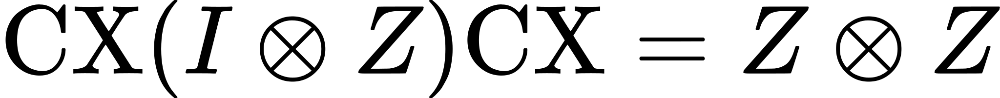
. Conjugation turns a generator acting on one position into a generator acting jointly on two.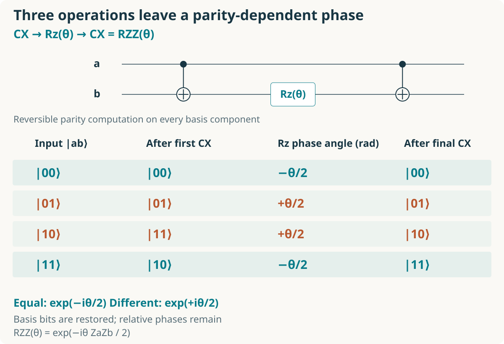
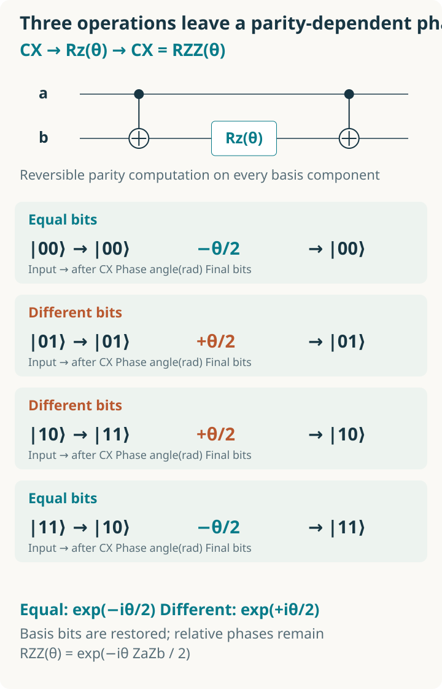
This operation can entangle two qubits in superposition. Applied to  , it leaves all four amplitude magnitudes at 1/2 but creates a relative phase between the equal-bit and unequal-bit components. At
, it leaves all four amplitude magnitudes at 1/2 but creates a relative phase between the equal-bit and unequal-bit components. At  , the two qubits become maximally entangled. At
, the two qubits become maximally entangled. At  , however,
, however,  , which separates into two local Z operations. Both the phase pattern and the input state determine entanglement.
, which separates into two local Z operations. Both the phase pattern and the input state determine entanglement.
Why does an energy difference become a rotation?
Consider two spins coupled through an Ising interaction. Taking Pauli eigenvalues to be ±1, define the coupling as

The coupling constant  has units of energy. For
has units of energy. For  ,
, 00 and 11, with equal Z values, have energy +J. The opposite configurations 01 and 10 have energy −J. This is an antiferromagnetic coupling: opposite configurations have lower energy.
In quantum mechanics, a component with energy E acquires a phase
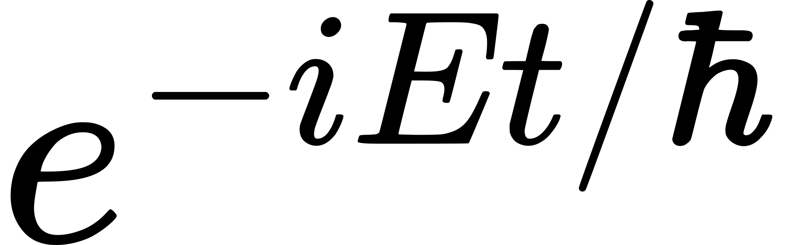
over time t. The four components of the two-spin state accumulate phases in different directions according to their energies. Comparing this time evolution with the gate above gives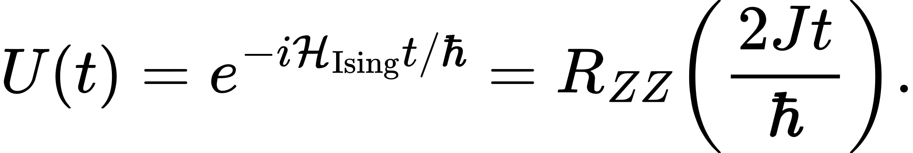
The rotation angle  is dimensionless. The factor of 2 follows from using Pauli operators and the convention
is dimensionless. The factor of 2 follows from using Pauli operators and the convention
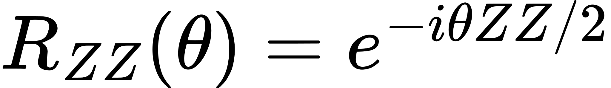
. Writing the Hamiltonian in terms of physical spin operators would put those factors into the definition of the coupling constant as well.
would put those factors into the definition of the coupling constant as well.
The rotation angle contains the coupling strength and how long it acts. This is why a circuit can represent a physical system's time evolution. Once we choose the time t to simulate, the required angle is fixed. The device implements that transformation using its available native gates. Decomposition into two CNOTs is one way to do so. The device's actual drive duration and the simulated system's time t are related through their respective Hamiltonians and the control method.
A transverse term  would also require X rotations. The ZZ term distinguishes equal from unequal spin values; the X terms mix Z states. These operators generally do not commute, so their order affects the result. Our review of observable-aware quantum dynamics takes up the construction of time evolution from short steps involving several terms.
would also require X rotations. The ZZ term distinguishes equal from unequal spin values; the X terms mix Z states. These operators generally do not commute, so their order affects the result. Our review of observable-aware quantum dynamics takes up the construction of time evolution from short steps involving several terms.
Putting a problem into a circuit
Now connect two vertices with one edge. Assign 0 or 1 to each vertex. Different assignments earn 1 point; equal assignments earn 0. This is the smallest instance of MaxCut, which divides a graph into two groups to maximize the number of edges crossing between them. The good answers are 01 and 10.
We already know the answers. Working at this size lets us examine every intermediate state and see how a problem's condition becomes a formula and then a gate. The score for two classical bits is
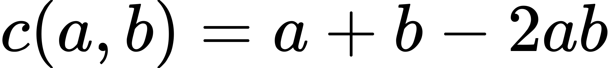
A bit value of 0 corresponds to Z eigenvalue +1, and a bit value of 1 to −1. Replace by
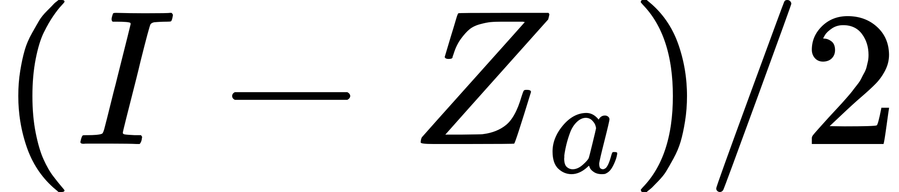
and by . Substitution and simplification give the score operator: [4]
. Substitution and simplification give the score operator: [4]
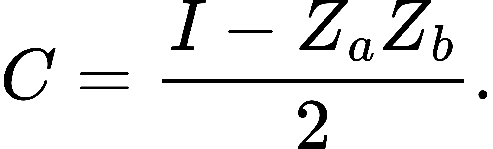
Acting on the four bit strings, this operator returns their scores as eigenvalues: 0 for 00 and 11, and 1 for 01 and 10. To express score maximization as energy minimization, we could define
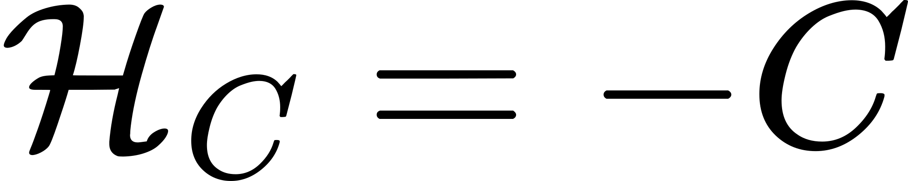
. Here we keep the score-maximization convention of the original quantum approximate optimization algorithm, QAOA. [4]Start in  . Each candidate has probability 1/4, so the chance of earning 1 point is 1/2. First apply the score-dependent phase operation
. Each candidate has probability 1/4, so the chance of earning 1 point is 1/2. First apply the score-dependent phase operation
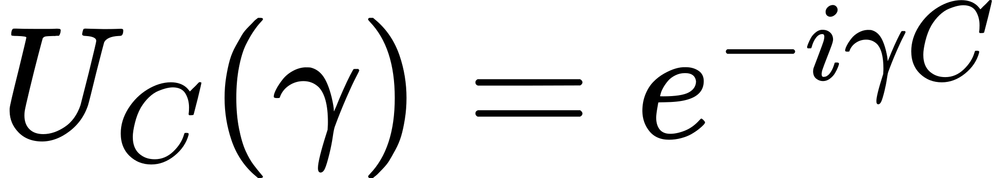
, where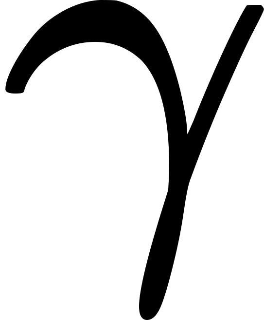
is dimensionless. Zero-score components stay unchanged, and the components scoring 1 are multiplied by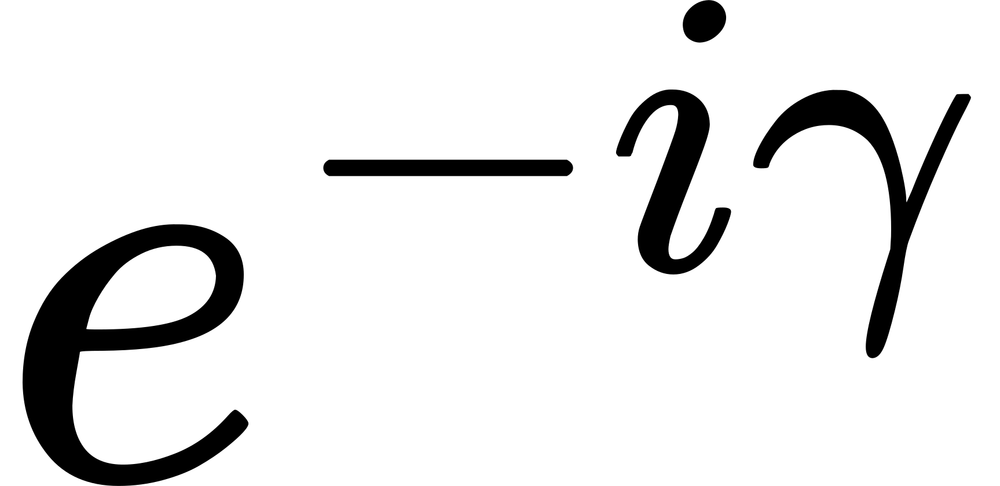
: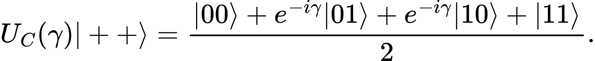
The problem's condition is now encoded in the relative phases of the four amplitudes. We can also read off the gate to implement:

Apart from the common factor  , this is the CNOT–Rz–CNOT circuit, with Rz angle −γ on b. The short circuit that started our discussion corresponds to the score term of the problem we chose.
, this is the CNOT–Rz–CNOT circuit, with Rz angle −γ on b. The short circuit that started our discussion corresponds to the score term of the problem we chose.
All four probabilities are still 1/4. The probability of scoring 1 is still 1/2. Having written the score into phase, we now need to mix the components so that phase can affect the outcomes.
Turning phase differences into answer probabilities
In this QAOA example, we apply an X rotation to each qubit. Using the mixing operator
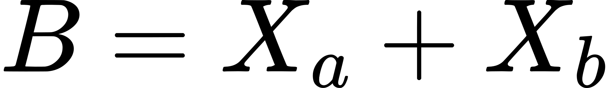
and parameter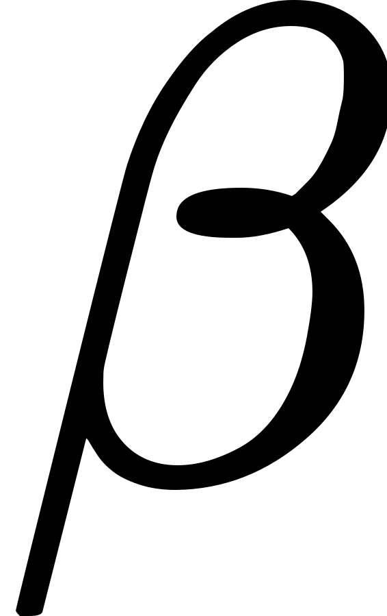
, [4,5]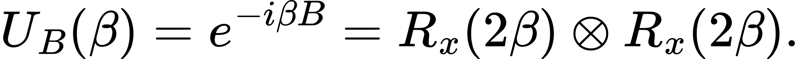
An X rotation brings each component together with other components of the Z basis. Since
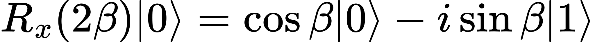
, several initial bit strings contribute amplitudes to any one final two-qubit bit string. The phases they acquired in the problem phase layer change the magnitude of their sum.Working through the small example, the probability of a good answer after both layers is
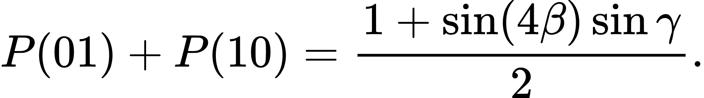
The two parameters set the phase difference we use and how strongly we mix the components. Choose  and
and  , and the product of the two sine factors is 1. The final state is
, and the product of the two sine factors is 1. The final state is

We can watch one cancellation directly. After the problem phase layer at γ=π/2, write  and
and
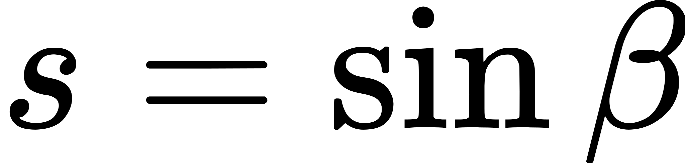
. The final amplitude of00 receives a combined contribution  from the original
from the original 00 and 11, and a contribution  from the original
from the original 01 and 10. Its amplitude is therefore  . At β=π/8, the two terms have equal magnitude and cancel exactly. The −i acquired in the problem phase layer and the −i from an X rotation multiply to produce the minus sign used in this cancellation.
. At β=π/8, the two terms have equal magnitude and cancel exactly. The −i acquired in the problem phase layer and the −i from an X rotation multiply to produce the minus sign used in this cancellation.
In the ideal statevector calculation, amplitudes leading to 00 and 11 cancel, leaving 01 and 10 with probability 1/2 each. Their sum is 1, so measurement returns one of the two good answers. The success probability starts at 50%, stays at 50% immediately after the problem phase layer, and reaches 100% after mixing.
Read the phase arrows and probability bars together in Figure 3. The middle stage records phase; the final stage changes how often the answers appear. Following both makes the purpose of each layer visible. Reversing the phase and mixing layers leaves the probability of a good answer at 1/2 for this initial state. Because is an eigenstate of B, a mixing layer applied first only gives the entire state a common phase.
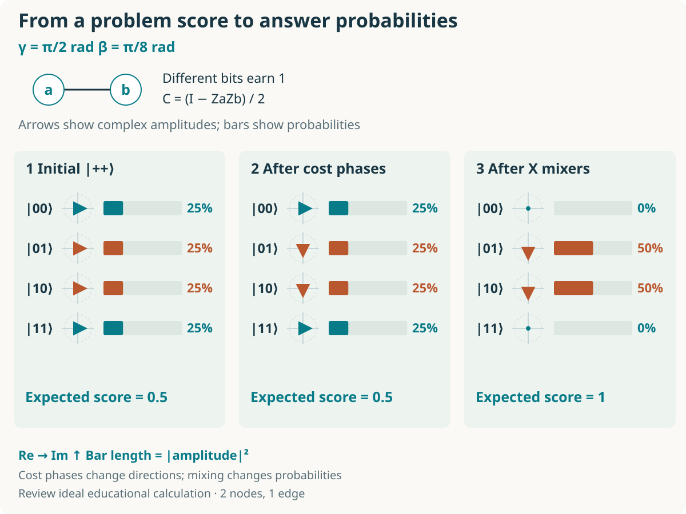
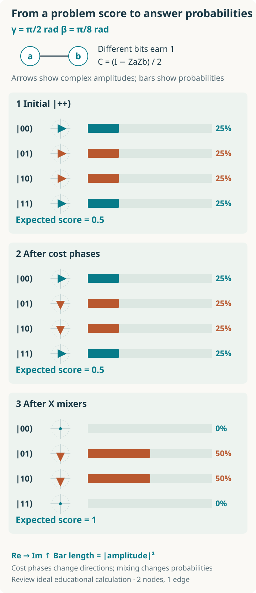
In the calculation tool, start with the two-vertex example and vary γ and β. At the “After cost phases” stage, the arrows move while the probabilities stay fixed. At “After X mixers,” the same angle changes appear in the probability bars. You can also compare γ=0 or β=0. The reset button restores the angles used in the calculation above.
How do we find useful angles for a larger problem? One measurement gives one bit string. We prepare and measure the same circuit repeatedly to estimate its mean score, and a classical optimizer uses that estimate to update the angles. QAOA repeats this process with circuits built from alternating problem phase and mixing layers. We chose good angles analytically for the small example. For larger graphs, that search becomes an important part of the algorithm's cost. [4]
More couplings call for a new choice of angles
Choose the triangle in the calculation tool, and three bits are joined by three edges. The score sums the contribution of each edge:  . Once two spins point oppositely, the remaining spin cannot satisfy both its neighbors. This is the familiar frustration of an antiferromagnetic triangle. The maximum score is 2, reached by all six bit strings other than
. Once two spins point oppositely, the remaining spin cannot satisfy both its neighbors. This is the familiar frustration of an antiferromagnetic triangle. The maximum score is 2, reached by all six bit strings other than 000 and 111.
Applying the same RZZ building block to each edge makes the problem phase layer. The angles must now be chosen for this coupling structure. Reusing  lowers the ideal calculation's mean score from an initial 1.5 to 0.75. Choosing angles suited to the triangle,
lowers the ideal calculation's mean score from an initial 1.5 to 0.75. Choosing angles suited to the triangle,
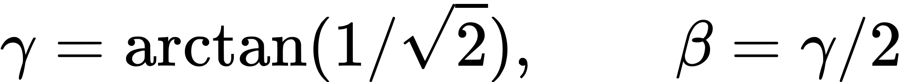
instead reaches a mean score of 2 with the same single layer. Each of the six optimal answers has probability 1/6. Comparing the two sets of example angles in the tool shows why a change in coupling structure calls for a new design of phases and interference.
The ZZ terms on different edges commute, so this example's problem phase layer factors exactly into a product of edgewise RZZ gates. Whether two gates sharing a qubit can run at the same time depends on the device's controls. When the problem graph differs from the device's connectivity, additional operations to move qubits may also be needed. Mathematical decomposition and physical circuit depth both enter the design.
What a researcher should read in a circuit
Even for the same rotation gate, the way we set its angle depends on the algorithm's purpose. Hamiltonian simulation matches angles to given coupling constants and the time to simulate. QAOA searches for angles that increase the mean score. A variational quantum eigensolver, VQE, searches the angles of a circuit-prepared state
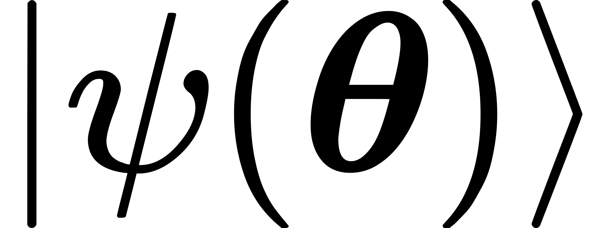
to lower its energy . Its variational principle makes the energy of a normalized trial state an upper bound on the ground-state energy. [6]
. Its variational principle makes the energy of a normalized trial state an upper bound on the ground-state energy. [6]
We can read the family of states a circuit can prepare as its ansatz: the assumed form of the states to explore. The positions of Rz and Rx gates, and the choice of qubits to connect, determine which states are accessible. Preserving a physical system's particle number or symmetries in the circuit can reduce the search space. If operations needed to create the correlations of interest are missing, even successful optimization may struggle to reach the desired state. The judgment used to choose wavefunction forms and variational degrees of freedom in computational condensed-matter physics carries over to circuit design.
A universality theorem states that arbitrary single-qubit operations combined with CNOT can construct arbitrary unitary transformations on several qubits. [7] Turning that possibility into an algorithm requires using problem structure to implement the needed transformation with few resources. We must choose an error tolerance and circuit depth, count angle-search iterations and measurement shots, and compare time and cost against classical computation at the same target accuracy. In our small two-qubit calculation, we evaluated every amplitude directly. Evaluating performance for a larger problem requires specifying its scale and comparison method.
Several calculations can help us check a circuit before tuning its angles. Compare the classical scores with the score operator's eigenvalues on small inputs. Compute intermediate states to see where phases and probabilities change. Set parameters to zero, reverse operation order, and check that intended symmetries hold. Two-qubit Z measurement distributions can match those of a mixture whose coherence has been lost; checking entanglement therefore requires correlations in other bases or an appropriate witness as well. In an educational calculation with a known statevector, we can check factorization directly.
The same questions help us read circuits proposed or generated by AI. Which terms do they implement? Which symmetries do they preserve? What does the measured quantity mean in the original problem? This is also the connection between candidate generation and checking discussed in our review of automated circuit design. Interpreting a short piece of circuit code calls for expertise that considers the problem, state, and observables together.
Return to CNOT–Rz–CNOT, and the small boxes have acquired meaning. The first CNOT puts the relationship between two values in the target. The rotation assigns a phase to that relationship. The final CNOT restores the original bit arrangement. When subsequent operations suited to the problem use that phase in interference, answer probabilities change. Choosing which differences to record as phase, and in which observable to read them, gives a concrete place to begin designing a quantum circuit.
Calculations and reproducibility: The probabilities and intermediate states in this article are ideal statevector educational calculations using NumPy 2.0.2. [8] The checking code and calculation record are provided. Figures use the same gate conventions, and the tool updates states directly in the browser. For single-qubit foundations, see the quantum machine-learning lecture notes.
References
- [1]
D. Buchta, A small identity in quantum computing can tell a surprisingly big story, LinkedIn (4 November 2026) (accessed 5 November 2026).
- [2]
IBM Quantum, RZGate (accessed 5 November 2026).
- [3]
IBM Quantum, RZZGate (accessed 5 November 2026).
- [4]
E. Farhi, J. Goldstone, and S. Gutmann, A quantum approximate optimization algorithm, arXiv:1411.4028v1 (2014).
- [5]
IBM Quantum, RXGate (accessed 5 November 2026).
- [6]
A. Peruzzo, J. McClean, P. Shadbolt, M.-H. Yung, X.-Q. Zhou, P. J. Love, A. Aspuru-Guzik, and J. L. O’Brien, A variational eigenvalue solver on a photonic quantum processor, Nat. Commun. 5, 4213 (2014).
- [7]
A. Barenco, C. H. Bennett, R. Cleve, D. P. DiVincenzo, N. Margolus, P. Shor, T. Sleator, J. A. Smolin, and H. Weinfurter, Elementary gates for quantum computation, Phys. Rev. A 52, 3457 (1995).
- [8]
C. R. Harris et al., Array programming with NumPy, Nature 585, 357 (2020).